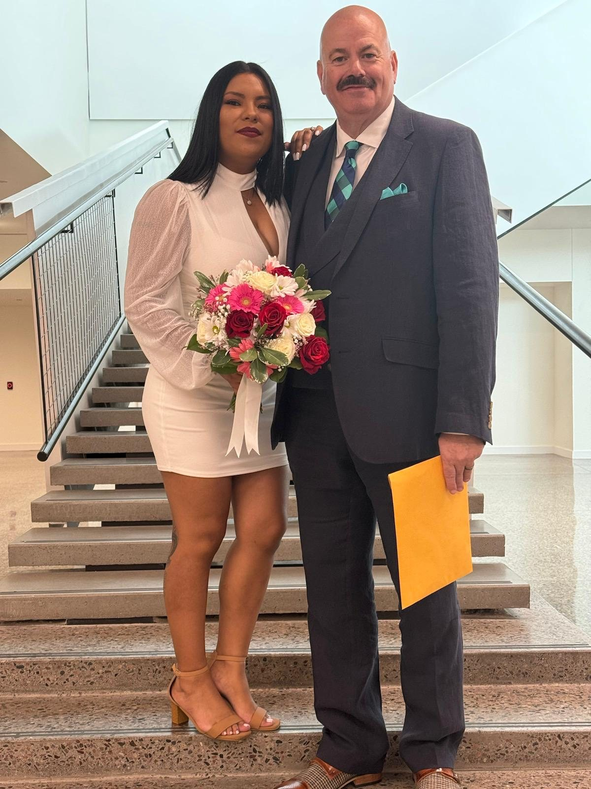
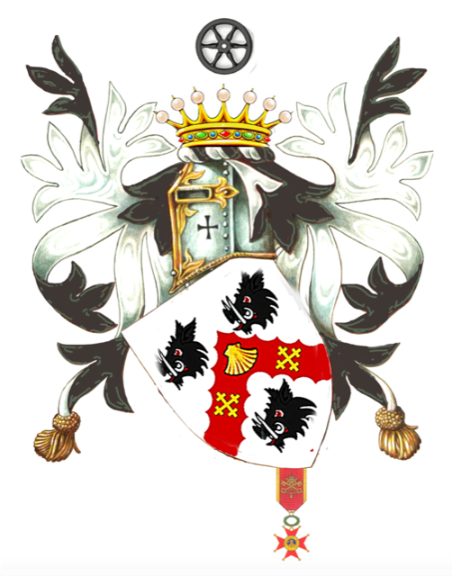

Kurtis P. Orcutt is an American business executive, international chivalric leader and Christian clergyman. His professional career has encompassed automotive, recreational vehicle, powersports and marine industries, while his service has included charitable, religious, historical and international organizations.
From dealership operations to national executive leadership and entrepreneurship.
02International ServiceChancellor General of the Sovereign Military Order of the Temple of Jerusalem (OSMTH).
03Honors & DistinctionsA structured record of chivalric, civic and honorary distinctions.
04Faith & MinistryChristian faith, Anglican ministry and service.
05History & LegacyFamily, travel, Holy Land study and archaeological interests.
06Biography & EducationPersonal background, education and a consolidated life record.
Faith and family are central to Kurtis Orcutt's life. Kurtis and Margarita Orcutt were married on August 15, 2024. Their family story is presented here alongside a lifetime of professional leadership, Christian commitment and service to others.

Kurtis's ceremonial styles, post-nominals, decorations and dignities are preserved in a dedicated record rather than crowding the primary biography.
Explore Honors